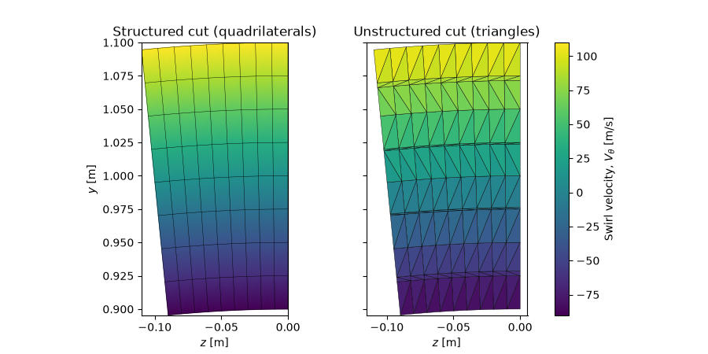

Note
Go to the end to download the full example code.
Cutting and averaging a flow field¶
A spatially-resolved CFD solution must be reduced to mean quantities before it
can be compared with a mean-line design point or an experimental traverse. This
example takes a non-uniform flow field on a 3-D ember.block.Block,
extracts a cross-sectional cut, and reduces it with the ember.average
module.
Two subtleties are illustrated. First, mass-averaging and area-averaging give
different answers for a non-uniform flow, and the mixed-out state (the uniform
flow carrying the same conserved fluxes through the same area) differs from
both, with an associated entropy rise. Second, a cut need not follow grid lines:
ember.cut.unstructured() returns a triangulated plane that every averaging
function accepts unchanged.
import numpy as np
import matplotlib.pyplot as plt
import matplotlib.tri as mtri
import ember.block
import ember.fluid
import ember.average
import ember.cut
from ember import util
A sheared annular flow field¶
We build a 3-D block spanning a short length of an annulus and impose a radially varying flow: an axial velocity with a mid-span dip, solid-body-like swirl, and a radial temperature gradient at constant pressure. The radial component is set to zero. This stands in for a turbine-exit traverse plane.
fluid = ember.fluid.PerfectFluid(cp=1005.0, gamma=1.4, mu=1e-5, Pr=0.72)
block = ember.block.Block(shape=(8, 9, 10))
block.set_fluid(fluid)
block.set_xrt(util.linmesh3((0.0, 0.1), (0.9, 1.1), (0.0, 0.1), block.shape))
block.set_Vr(0.0)
block.set_Vx(45.0 + 2000.0 * (block.r - 1.0) ** 2) # Axial velocity, m/s
block.set_Vt(10.0 + 1000.0 * (block.r - 1.0)) # Swirl velocity, m/s
block.set_P_T(1e5, 300.0 + 300.0 * block.r) # Constant pressure, radial T gradient
Structured cut and integrated flows¶
A structured cut is simply an index: block[0] selects the first axial
plane and drops that axis, leaving a 2-D block. The averaging module
integrates the mass flow and the projected area vector over it (only the axial
component of area is non-zero for this constant-x plane).
cut = block[0]
mdot = ember.average.flow_mass(cut)
area = ember.average.total_area(cut)
print(f"Mass flow: {mdot:.4f} kg/s")
print(f"Projected area vector: {np.asarray(area)}")
Mass flow: 0.6017 kg/s
Projected area vector: [0.02000001 0. 0. ]
Three averages, three answers¶
We reduce the swirl velocity three ways. Mass- and area-averaging weight the local value by mass flux and by area respectively; for a non-uniform field they disagree. The mixed-out state is the uniform flow with the same mass, momentum and energy fluxes through the same area – a more physical mean that matches neither simple average. Mixing is irreversible, so its entropy exceeds the mass-averaged entropy of the real flow.
Vt_mass = ember.average.mass_average(cut.Vt, cut)
Vt_area = ember.average.area_average(cut.Vt, cut)
mixed = ember.average.mix_out(cut)
s_mass = ember.average.mass_average(cut.s, cut)
entropy_rise = float(mixed.s) - s_mass
print(
f"Swirl Vt: mass-avg {Vt_mass:.2f} area-avg {Vt_area:.2f} "
f"mixed-out {float(mixed.Vt):.2f} m/s"
)
print(f"Entropy rise on mixing: {entropy_rise:.3f} J/kg/K")
Swirl Vt: mass-avg 11.78 area-avg 13.28 mixed-out 15.48 m/s
Entropy rise on mixing: 3.539 J/kg/K
An unstructured cut¶
When the plane of interest does not coincide with a grid line, a triangulated
cut is taken along a meridional segment with ember.cut.unstructured().
The same averaging functions apply; only the area integration differs (sum of
triangles rather than quadrilaterals), so the mass flow agrees to within the
triangulation error and a sign convention.
xr_cut = np.array([[0.02, 0.9], [0.08, 1.1]]) # (x, r) start and end points
cut_unstr = ember.cut.unstructured(block, xr_cut)
mdot_unstr = ember.average.flow_mass(cut_unstr)
print(
f"Unstructured cut: {cut_unstr.shape[0]} triangles, "
f"mass flow {abs(mdot_unstr):.4f} kg/s"
)
Unstructured cut: 216 triangles, mass flow 0.6017 kg/s
Structured versus triangulated meshes¶
The two cut types are drawn in the cross-sectional plane, coloured by swirl
velocity: the structured cut tiles the sector with quadrilaterals, the
unstructured cut with triangles. The Cartesian cross-section coordinates
y and z are read
straight off the block.
levels = dict(vmin=float(cut.Vt.min()), vmax=float(cut.Vt.max()))
fig, axs = plt.subplots(1, 2, figsize=(9, 4.5), sharey=True)
# Structured: quadrilateral mesh
Zs, Ys = np.asarray(cut.z), np.asarray(cut.y)
mesh = axs[0].pcolormesh(Zs, Ys, np.asarray(cut.Vt), shading="gouraud", **levels)
axs[0].plot(Zs, Ys, "k-", lw=0.3) # Grid lines along each direction
axs[0].plot(Zs.T, Ys.T, "k-", lw=0.3)
axs[0].set_title("Structured cut (quadrilaterals)")
# Unstructured: triangle mesh (each row of the block is one triangle)
Zu, Yu = np.asarray(cut_unstr.z), np.asarray(cut_unstr.y)
triang = mtri.Triangulation(Zu.ravel(), Yu.ravel(), np.arange(Zu.size).reshape(-1, 3))
axs[1].tripcolor(
triang,
facecolors=np.asarray(cut_unstr.Vt).mean(axis=1),
edgecolors="k",
linewidth=0.3,
**levels,
)
axs[1].set_title("Unstructured cut (triangles)")
for ax in axs:
ax.set_aspect("equal")
ax.set_xlabel("$z$ [m]")
axs[0].set_ylabel("$y$ [m]")
fig.colorbar(mesh, ax=axs, label="Swirl velocity, $V_\\theta$ [m/s]")
plt.show()

Total running time of the script: (0 minutes 0.200 seconds)